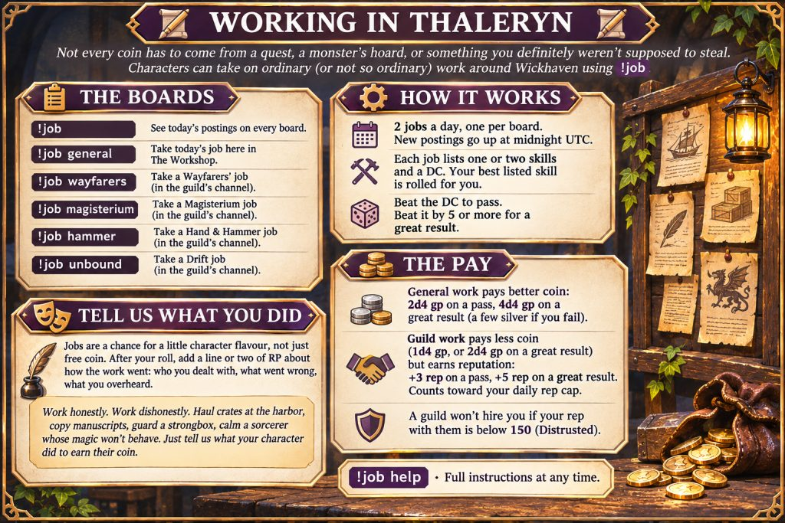

Guild jobs and trainers
Not every coin has to come from a quest, a monster's hoard, or something you definitely weren't supposed to steal.
Day labor: !job

Take on a day's work around Wickhaven. !job shows today's postings on every board. !job <board> takes one, in that board's channel.
- You get 2 jobs a day, one per board. New postings go up at midnight UTC.
- Each job lists one or two skills and a DC. The alias rolls your best listed skill, or name one yourself:
!job <board> <skill>(a partial name works, like!job hammer ath). Name a skill the job doesn't use and you're told which ones it takes, and no job is used up. - Beat the DC to pass. Beat it by 5 or more for a great result.
- A guild won't hire you below 125 rep (Despised).
!jobshows your odds to pass each posting and stars the two you're most likely to pass today.!job helpshows the full instructions.!job generalalso answers to!job genand!job workshop. Use a job in the wrong channel and it links you to the right one.
| Board | Where | Pays | Rep |
|---|---|---|---|
general |
The Workshop | Pass 2d4 gp, great 4d4 gp, fail 2d4 sp | None |
wayfarers, magisterium, hammer, unbound |
That guild's hall | Pass 1d4 gp, great 2d4 gp, fail nothing | +3 pass, +5 great (counts toward the daily cap) |
Tell us what you did
Jobs are a chance for a little character flavour, not just free coin. After your roll, add a line or two of RP about how it went: who you dealt with, what went wrong, what you overheard.
Guild work fits the guild: Wayfarers guide greenhorns and ride caravan escort, the Magisterium copies manuscripts and catalogs finds, the Hand & Hammer hauls stock and inspects goods, and the Unbound calm surging sorcerers and run messages out of the Drift.
Guild trainers: !train
See also Training & study for the Training Yard and the Archive.
Learn a new language, tool, weapon or skill from Wickhaven's trainers. It takes weeks of sessions and coin.
| Command | What it does |
|---|---|
!train list |
What this trainer teaches, or where to find each trainer |
!train <proficiency> |
Start training, in that trainer's channel |
!train |
Take your weekly session (add adv, dis or guidance if they apply) |
!train status |
Your progress and when your next session is |
!train log |
Everything you've finished |
!train quit |
Drop your current training, with no refund |
- One session a week. You pay, then roll d20 + your best ability for that proficiency: under 10 is no progress, 10–19 is +1, 20+ is +2. On a natural 1 the trainer sends you home and you don't pay.
- Sessions needed: 10 minus the ability modifier (15 for skills), minimum 3. One thing at a time.
- Cost: 5 gp a session for open lessons, 10 gp for skills and advanced lessons.
- Guild trainers give +7 rep per paid session, outside the daily cap.
- Advanced lessons need 375+ (Familiar Face) with the trainer's guild. If the guild Despises you, it won't teach you at all.
- The Lowside fixer belongs to no guild, never checks rep and gives no rep.
- When you finish, staff approve the new proficiency. Add it to your sheet and run
!update.
| Trainer | Open lessons | Advanced (375+) |
|---|---|---|
| ✨ Magisterium | Common languages, calligrapher's supplies, Arcana, History, Investigation, Religion | Exotic languages (Abyssal, Celestial, Deep Speech, Infernal, Primordial, Sylvan, Undercommon), alchemist's supplies |
| 🔨 Hand & Hammer | Carpenter's, mason's, smith's, cobbler's, leatherworker's, weaver's and woodcarver's tools; brewer's supplies, potter's tools, cook's utensils; Persuasion | Tinker's, glassblower's and jeweler's tools |
| 🧭 Wayfarers | Simple weapons, cartographer's and navigator's tools, Athletics, Acrobatics, Animal Handling, Perception, Survival, Nature | Martial weapons |
| 🔥 Unbound | Instruments, painter's supplies, Medicine, Insight, Performance, Intimidation | Herbalism kit |
| Lowside fixer | Gaming sets, disguise kit, Deception, Sleight of Hand, Stealth | Forgery kit, thieves' tools, poisoner's kit (no rep needed) |